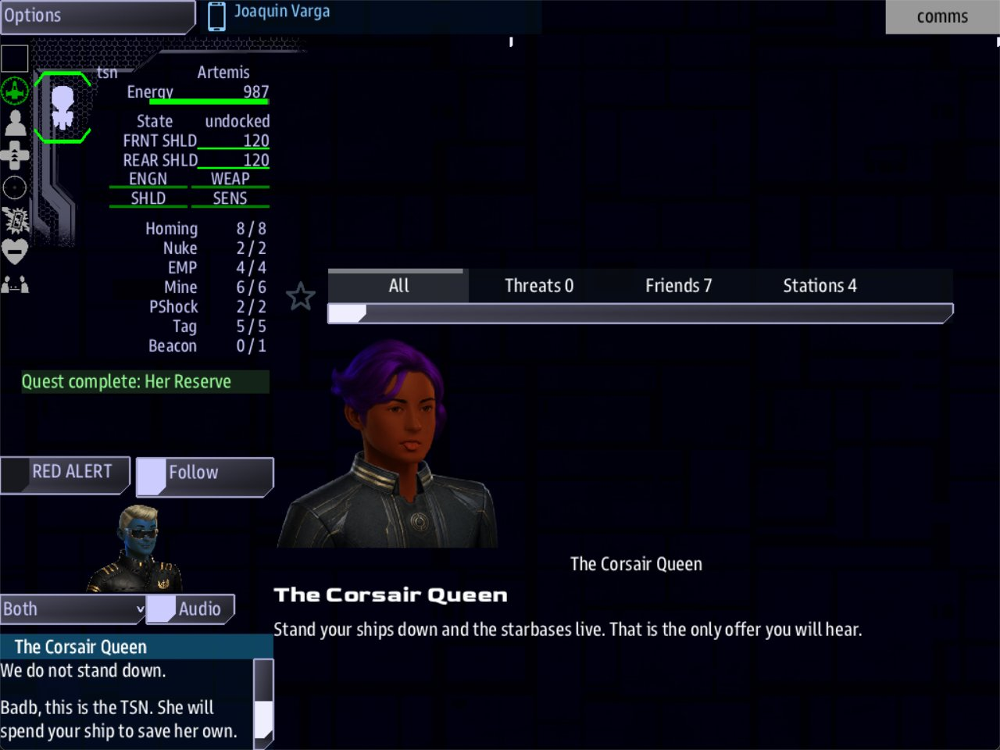

Class 2, Lecture 11 - Capstone: a boss with a voice¶
What you will have at the end¶
The Corsair Queen, speaking. As the crew's ten minutes run down, the Morrigan calls the clock on Comms, in your words. When the Queen arrives she hails the crew herself, with a face and a name. And one answer on that call turns her second ship, the Badb, to the crew's side.

Comms with the Queen's call open, her offer under her name, and two answers in the list.This lecture puts the class together. The boss is from Lectures 8 to 10. The scene, the call and the answers are from Lectures 3 to 5.
All of her voice lives in her one boss file:
| Part of her voice | Where in corsair_queen.amd |
|---|---|
The words in her objectives, and her Win: and Lose: sentences |
Her objectives, as in Lecture 10 |
| The Morrigan calling the clock | Two lines on Sink the Morrigan |
| The Queen's call, her face, and the answers | Two sections at the end of the file: her people, and her scenes |
A boss file can carry its own cast and its own scenes. The Siege reads them when that boss arrives. So this capstone is one file, typed in two parts: first her voice on the clock, then the call. The card you made in Lecture 10 stays exactly as it is. It still brings her third ship, and nothing is added to it.
The video¶
About 7 minutes. Subtitles are available in the player.
Before you start¶
corsair_queen.amdas Lecture 10 left it, indata\missions\common_data\bosses.- The folder
LegendaryMissions\corsair_queen, with your card in__init__.mast. sbs lint common_data\bossessaysclean, andsbs lint LegendaryMissionsends with0 error(s).- From Lecture 3: a scene, and
%takes. From Lecture 4: answers, and what follows the;. From Lecture 5: a Beat that places a call withAction:, and a second voice.
Both of Lecture 10's files are in its example\ folder if you need them again.
Open the data\missions folder in VS Code.
Words for this lecture:
| Word | Meaning |
|---|---|
| The clock | The time limit on Sink the Morrigan: Fails when: 10 minutes |
| Cast | The people in a Characters section. A boss file can have one of its own |
| Beat | A record that is live as soon as it exists and belongs to the whole crew. You used one in Lecture 5 to place a call |
Part 1 - Her voice on the clock¶
Step 1 - The test numbers¶
Three numbers, so that you can hear her inside two minutes.
In corsair_queen.amd, in the first fence:
In the fence of Sink the Morrigan:
In the card, LegendaryMissions\corsair_queen\__init__.mast:
You put the real numbers back in Step 11.
Step 2 - Her voice on the clock¶
In Lecture 10 you learned that the crew gets no warning as the time runs down. A quest can give one, and it can say who gives it.
Add two lines to the fence of Sink the Morrigan, under the Lose: line:
| Line | Meaning |
|---|---|
Speaker: morrigan |
Who sends the warning. Here it is a role: the ship named on your Named: line |
Signal says: |
What she sends. Where you write {time}, the game puts the time that is left |
The warning is sent to Comms as a message from the Morrigan. Its title is the objective's name. It is sent at fixed moments, and only those that fit inside your time limit:
| Time left | Sent when the limit is |
|---|---|
| 5 minutes | More than 5 minutes |
| 2 minutes | More than 2 minutes |
| 1 minute | More than 1 minute |
| 30 seconds | More than 30 seconds |
So a ten-minute limit gets all four. Your three-minute test gets three.
Three rules for the line:
{time}is small letters, in curly brackets.{Time}sends an empty message.- Do not start the line with
{time}. Lint calls it an error, and the game sends nothing. Put a word in front. - When the Morrigan is sunk, she stops calling. The objective is finished, and its clock with it.
Now check it:
== common_data\bosses\corsair_queen.amd ==
[WARNING] line 35:10: `sink_morrigan` gives its voice to `morrigan`, who is not in the cast (dangling-speaker)
1 amd + 0 mast file(s): 0 error(s), 1 warning(s)
This one warning is wrong here, and you leave it. Lint looks for morrigan among the
people of a Characters section. The Morrigan is not a person. She is a ship. The game
looks for a character and, when there is none of that name, for a ship that wears the
role. It finds the Morrigan. Step 3 proves it.
In Step 5 you give this file a Characters section of its own. The warning stays, because the Morrigan is still not one of the people in it.
It is the only warning in this course that you are told to keep. Read it every time all
the same: if the name after "voice to" is not a name on your Named: line, the warning is
true, and nobody calls the clock.
Step 3 - Hear her¶
Start LegendaryMissions with a Comms console:
Choose Corsair Queen on the Boss line of the Options panel and press Start
Mission. She arrives about four seconds in. Do nothing. About a minute later Comms gets a message
from the Morrigan: its header, Morrigan (pirate), appears at the top of Comms. Click it
to read the message, titled Sink the Morrigan:
(2:00 or 1:59: the time is read at the moment it is sent.)
A minute after that it says 1:00 or 0:59, then 0:29. Half a minute later the game
is lost, with your Lose: sentence.
That is her voice on the clock: two lines.
Part 2 - The call¶
Step 4 - Place the call¶
You know how to write a call: a Beat with an Action: line places it, a Characters
section says who is calling, and a Dialogue section holds what is said. All three go in
the boss file. Start with the Beat.
Type this at the very end of corsair_queen.amd, with one blank line above it:
## [The Queen Calls](parley)
---
Beat
Parent: siege_mission
Action:
- queen hails queen_calls
---
The Corsair Queen is on the line. Comms should answer her.
Two hashes, like every objective of hers. It has no Required: line: a crew that never
answers can still win.
Run lint:
== common_data\bosses\corsair_queen.amd ==
[WARNING] line 35:10: `sink_morrigan` gives its voice to `morrigan`, who is not in the cast (dangling-speaker)
[WARNING] line 93: `hails queen_calls` names `queen_calls`, which no record in this document declares. (dangling-action-ref)
1 amd + 0 mast file(s): 0 error(s), 2 warning(s)
The second warning is true. The Beat places a call, and there is nobody to make it and nothing to say. Played like this, no call comes. That is the next step.
Step 5 - Her people and her scene¶
Go to the very end of the file again. Leave one blank line, and type two sections you know from your own mission:
## [Characters](characters)
### [The Corsair Queen](queen)
---
Face: terran_female
---
Flies the Morrigan. Has never lost a siege she chose to join.
### [First Mate Orla](orla)
---
Face: terran_female
---
Runs the Badb's deck. Has buried three of the Queen's crews.
## [Dialogue](dialogue)
### [The Queen Calls](queen_calls)
---
Speaker: queen
When: hail
Title: The Corsair Queen
Priority: 9
---
@queen
% You held longer than I was told you would.
% So you are the ones who broke my raiders.
@queen
% Stand your ships down and the starbases live. That is the only offer you will hear.
- [We do not stand down.]() ; completes parley
| Line | Meaning |
|---|---|
## [Characters](characters) and ## [Dialogue](dialogue) |
Two hashes, like an objective. The Siege tells them from objectives by their keys, so the keys must be exactly characters and dialogue |
### [The Corsair Queen](queen) |
Three hashes: a person in the cast. queen is the key the Beat's Action: line uses |
### [The Queen Calls](queen_calls) |
Three hashes: a scene. queen_calls is the other key on that Action: line |
; completes parley |
The answer finishes the Beat you typed in Step 4 |
Face: lines work here as they do in your mission. Use the ones from your own cast.
Keep the two sections at the end of the file, below every objective. The game finds
them by their keys wherever they are, but you will not. Everything you add to her story
from now on goes above the line ## [Characters](characters).
Run lint again:
== common_data\bosses\corsair_queen.amd ==
[WARNING] line 35:10: `sink_morrigan` gives its voice to `morrigan`, who is not in the cast (dangling-speaker)
1 amd + 0 mast file(s): 0 error(s), 1 warning(s)
The warning about the call is gone. The one you keep is still there.
Step 6 - What the Siege does with her file¶
There is no line for you to paste. The Siege reads each part of the file itself:
| Part of the file | What the Siege does with it | When |
|---|---|---|
| The first fence | Puts her on the Boss line of the Options panel | When the mission starts |
| Each record with two hashes, except the two sections | Hands it to the crew as an objective | When she arrives |
## [Characters](characters) |
Brings its people into the game | When she arrives |
## [Dialogue](dialogue) |
Makes its scenes ready to be called | When she arrives |
Three things follow.
- Her people do not exist before she arrives. A crew that never thins the raiders never meets the Queen. That suits a Beat of hers, because her Beats are not live before she arrives either.
- Only the boss that was chosen is read. The Queen and First Mate Orla are not in a game played against the Warlord.
- Her card is not part of this. The card still sends the arrival sentence and brings the Nemain, and it needs nothing new.
Step 7 - Hear the call¶
Check both, as in Lecture 10:
The first prints the one warning from Step 2 and nothing else. The second ends with
0 error(s), and the only finding under a file of yours is that same warning.
Play it. As she arrives, Comms has a call waiting in its Incoming Hails list: The
Corsair Queen - The Corsair Queen. The first name is who is calling. The second is your Title: line. Open it. She
says one take of her first block. Press Continue. She makes her offer, and there is
one answer. Choose it, and the crew is told Quest complete: The Queen Calls.
Step 8 - An answer that matters¶
So far the call is words. Now one answer changes the battle.
In the Dialogue section, add a second answer to the scene The Queen Calls, and a second scene at the very end of the file:
- [We do not stand down.]() ; completes parley
- [Badb, this is the TSN. She will spend your ship to save her own.](badb_answers)
### [The Badb Answers](badb_answers)
---
Speaker: orla
---
% She has spent three crews this year. I will not be the fourth.
% Three crews this year, TSN. I counted them into the ground myself.
- [Then fly with us.]() ; completes parley, completes turn_badb, fails sink_badb
- [Then stay out of our way.]() ; completes parley
Among her objectives, type two more records. They go below the Beat The Queen
Calls, the record with two hashes and the key parley, and above the line
## [Characters](characters). Leave one blank line on each side:
## [Turn the Badb](turn_badb)
---
Beat
Parent: siege_mission
Objective: Comms: talk the Badb's crew round
Then: reveal badb_turns
---
The Badb's crew has buried three of the Queen's crews this year. They may listen.
## [The Badb Turns](badb_turns)
---
Quest
Scope: shared
Starts when: revealed
Parent: siege_mission
Objective: Leave the Badb alone
Done when: 5 seconds
Action:
- badb joins tsn
---
[](ship://pirate_strongbow) The Badb, flying with you
First Mate Orla has turned the Badb. She flies for you now.
Leave her alone. A ship that fires on her now fires on a friend, and the Queen will remember who turned.
Read the chain from the answer down:
| Link | What it does |
|---|---|
; completes parley |
The call is answered. Every road through the call ends with this |
completes turn_badb |
Finishes Turn the Badb, which has been in the Quest Log since she arrived |
Then: reveal badb_turns |
Finishing it starts The Badb Turns |
Action: - badb joins tsn |
When The Badb Turns starts, the ship with the role badb changes to the crew's side |
fails sink_badb |
The bonus for sinking her is closed. She is yours now |
joins is a word like hails: it goes in an Action: list, with a role in front of it
and a side's key after it. In a Siege the crew's side is tsn.
The crew is choosing. The Badb sunk is 300 credits. The Badb turned is one raider fewer and no credits.
Step 9 - Check it¶
From the first:
== common_data\bosses\corsair_queen.amd ==
[WARNING] line 35:10: `sink_morrigan` gives its voice to `morrigan`, who is not in the cast (dangling-speaker)
1 amd + 0 mast file(s): 0 error(s), 1 warning(s)
From the second: 0 error(s) on the last line. Under corsair_queen\__init__.mast there
is nothing, and under your boss file the one warning you know.
Each mistake below was made on purpose, one at a time, and each was played.
Lint tells you. The word in the last column is at the end of the line lint prints.
| Mistake | What the game does | Lint says |
|---|---|---|
Signal say: for Signal says: |
The Morrigan sends AUTOMATED SIGNAL - 0:30 REMAINING - FINAL, not your words |
unknown-field. It asks Did you mean and gives the words |
Signal says: that starts with {time} |
Nobody calls the clock | An error: fence-syntax |
Action: - queen hails queen_call, the scene's key misspelled |
No call. mast.runtime.log says there is no scene of that name |
dangling-action-ref |
The word Beat deleted from The Queen Calls |
No call. The record is a job waiting to be accepted | unknown-field, twice |
Then: reveal badb_turn, the s left off |
The answer closes the bonus, and the Badb stays a raider | dangling-reveal, and never-revealed on The Badb Turns |
; completes parlay on an answer |
The rest of that answer happens. The Queen Calls stays open | outcome-quest-missing |
Two outcomes with no comma, ; completes parley completes turn_badb, fails sink_badb |
Only the bonus is closed. The call's Beat stays open and the Badb stays a raider | outcome-quest-missing and outcome-run-together. The second writes the line out with its comma |
An answer that leads to badb_answer, a scene that is not there |
The call ends when that answer is chosen. The Queen Calls stays open | dangling-choice |
Speaker: quen in the scene |
The call is listed as coming from quen |
dangling-speaker and hail-speaker-mismatch. Both are true |
## [Dialogue](dialog), the section's key misspelled |
No call. The section and both scenes are jobs waiting in the crew's quest lists. mast.runtime.log says there is no scene called queen_calls |
unknown-field, five times: each says the record "is being read as a map" |
| The scene The Queen Calls typed with two hashes | No call. The scene, and the scene below it, are jobs waiting in the quest lists | An error, hail-unknown-scene, and the same five unknown-field warnings |
### [Characters](characters), the section typed with three hashes |
The call comes from queen, the bare key, with no face. The section and both people are jobs waiting in the quest lists |
dangling-speaker, four more times: the Queen and Orla are "not in the cast" |
| No Characters section at all | The call comes from queen, the bare key, with no face |
The same four |
The corsair_queen folder moved away |
The clock is still called, the Queen still calls, and the answer still turns the Badb. No arrival sentence and no reserve ship. mast.runtime.log says the hook was not found |
One more warning under your boss file: unfired-signal, about Her Reserve |
What lint cannot see. Lint says nothing new for any row here.
| Mistake | What the game does |
|---|---|
Speaker: morigan, the role misspelled |
Nobody calls the clock. Lint prints the same dangling-speaker warning as for a correct line, with the misspelled name in it |
Speaker: boss |
The clock is called by another of her ships: the Badb in one game, the Nemain in another. All three wear boss |
Speaker: queen on the clock: the person, not the ship |
Lint says clean, with no warning at all. In the game the warning was not sent in her name: it was filed as coming from the crew's own ship. Keep morrigan |
Signal says: with no Speaker: line |
Nobody calls the clock |
{Time} with a capital letter |
The Morrigan sends a message with no words in it |
## [Characters](character), the section's key misspelled |
The call comes from queen, the bare key, with no face. The section and both people are jobs waiting in the crew's quest lists |
| The Queen's record typed with two hashes | The same. She and First Mate Orla are jobs waiting in the quest lists |
Host: morrigan on a person's record |
Nothing. The line is not read here |
- badb joins tsnn, the side misspelled |
The answer closes the bonus, and the Badb stays a raider. mast.runtime.log says the side was not found |
- bdab joins tsn, the role misspelled |
The same. mast.runtime.log says nobody is called bdab |
fails sink_badb left off the turning answer |
The Badb changes sides, and the crew can still be paid 300 for sinking her |
No Parent: line on The Queen Calls |
Nothing. The call is placed all the same |
The boss file's Hook: line deleted |
No arrival sentence and no reserve ship. The Queen still calls |
These are fine.
| You wrote | Result |
|---|---|
| The two sections typed above her first objective | Works. The Siege finds them by their keys, wherever they are |
| An objective typed below the Dialogue section, with two hashes | Works. Keep the sections last all the same: it is where you will look for them |
Step 10 - Play it¶
Choose Corsair Queen on the Boss line, set Difficulty to 5, and start the mission. With the test numbers:
- About four seconds in she arrives. Every crew ship is told
The Corsair Queen has entered the sector. - Comms has her call waiting. The Quest Log has The Queen Calls and Turn the Badb among her objectives.
- Open the call. Continue. Choose
Badb, this is the TSN.The name above the answers changes to First Mate Orla. - Choose
Then fly with us.The strip under the left panel shows one line at a time: firstThe Corsair Queen - The Corsair Queen - answered (Then fly with us.). In the Quest Log, The Queen Calls and Turn the Badb are Done, and Sink the Badb is Failed. - The Badb is on the crew's side. There is one raider fewer to destroy. A few seconds
later the strip says
Quest complete: The Badb Turns. - Ten seconds after the Queen, the Nemain arrives, as in Lecture 10.
- A minute after she arrived, the Morrigan calls the clock.
Play it a second time and choose We do not stand down. Nothing changes but the words:
the Badb stays a raider and her bonus stays open.
Play it a third time and never answer. The game can still be won. The Queen Calls and Turn the Badb are still open when it ends.
What the side is paid, when the crew wins:
| The crew | Credits |
|---|---|
| Sinks the Morrigan, turns the Badb | 600 + 500 = 1,100 |
| Sinks the Morrigan and the Badb | 1,400 |
| Sinks the Morrigan, turns the Badb, sinks the Nemain | 1,500 |
The 500 is the Siege's own reward for keeping every starbase.
Step 11 - Put the real numbers back¶
In corsair_queen.amd:
In the card:
Add four lines to the note at the top of corsair_queen.amd:
//
// Her voice: the Morrigan calls the clock on Comms (Speaker: and Signal says:). When she
// arrives the Queen calls, and one answer turns the Badb. Her people and her scenes are
// the last two sections of this file.
Run both lint commands once more. The one warning has moved four lines down, to line 39.
Hand her to a friend¶
Nearly all of her is one file now. What your friend gets depends on what you send.
| You send | Your friend puts it | What plays |
|---|---|---|
corsair_queen.amd alone |
In common_data\bosses |
The boss, her ships, her objectives, the ten-minute clock and the Morrigan calling it, the Queen's call with her face, and the answer that turns the Badb. No arrival sentence and no reserve ship: Her Reserve sits open in the Quest Log, and the game can still be won |
The file, and the corsair_queen folder with its card |
The file in common_data\bosses, the folder in LegendaryMissions |
All of her |
Zip the folder the way you zipped your mission in Class 1, and send the .amd beside it.
Tell your friend two things:
- An update of LegendaryMissions removes the folder. Put it back afterwards.
- Run
sbs lint common_data\bosses. With the folder in place it prints one warning, aboutmorrigan. With the folder missing it prints two: the second says that Her Reserve waits for a signal nothing sends.
The same is true for you. Keep a copy of the folder outside LegendaryMissions. An update
does not touch common_data\bosses, so her file, with her voice in it, is safe where it
is.
The finished file¶
common_data\bosses\corsair_queen.amd:
// The Corsair Queen - my Siege boss.
// She arrives when 4 raiders in 10 are left: two named ships and three escort fleets,
// two levels above the game's difficulty. Three games in four the fleets are her own
// pirates. One game in four she has hired Kraliens.
//
// Her story: sink the Morrigan within ten minutes or the game is lost. The Badb is a
// bonus. Ninety seconds after she arrives a third ship, the Nemain, comes in. That part
// is her hook: LegendaryMissions\corsair_queen\__init__.mast.
//
// Her voice: the Morrigan calls the clock on Comms (Speaker: and Signal says:). When she
// arrives the Queen calls, and one answer turns the Badb. Her people and her scenes are
// the last two sections of this file.
# [Corsair Queen](corsair_queen)
---
Boss
Trigger: enemies_low
Low: 40%
Flies: 75% Pirate, 25% Kralien
Fleets: 3
Difficulty: +2
Named: Morrigan pirate_brigantine, Badb pirate_strongbow
Hook: corsair_queen_hook
---
The Corsair Queen watched the siege falter from the dark. Now she brings her own ships to finish it.
## [Sink the Morrigan](sink_morrigan)
---
Quest
Scope: shared
State: active
Parent: siege_mission
Required: true
Objective: Destroy the Morrigan within ten minutes
Done when: destroy 1 morrigan
Fails when: 10 minutes
Fatal: true
Lose: The Morrigan broke the line. The sector is hers.
Speaker: morrigan
Signal says: You have {time}, little ship. Then this sector is mine.
Reward: 600 credits
---
[](ship://pirate_brigantine) The Morrigan, the Queen's flagship
The Queen's flagship Morrigan leads the last assault. Sink her within ten minutes of her arrival, or the sector is lost.
-  Ten minutes, from the moment she arrives.
-  When the time is up, the game is lost.
## [Sink the Badb](sink_badb)
---
Quest
Scope: shared
State: active
Parent: siege_mission
Objective: Destroy the Badb
Done when: destroy 1 badb
Reward: 300 credits
---
[](ship://pirate_strongbow) The Badb, the Queen's second ship
A bonus. The Badb is the Queen's second ship. The siege can be won without sinking her.
## [Her Reserve](reserve)
---
Quest
Scope: shared
State: active
Parent: siege_mission
Objective: Watch for a third ship
Done when: signal nemain_arrived
Then: reveal sink_nemain
---
The Queen never commits everything at once. Watch for a third ship.
Somewhere out in the dark she is holding one more hull back, and she will send it in when it suits her, not when it suits you.
## [Sink the Nemain](sink_nemain)
---
Quest
Scope: shared
Starts when: revealed
Parent: siege_mission
Objective: Destroy the Nemain
Done when: destroy 1 nemain
Reward: 400 credits
---
[](ship://pirate_brigantine) The Nemain, the Queen's reserve
The Nemain is here: the Queen's reserve. Sink her too.
## [The Queen Calls](parley)
---
Beat
Parent: siege_mission
Action:
- queen hails queen_calls
---
The Corsair Queen is on the line. Comms should answer her.
## [Turn the Badb](turn_badb)
---
Beat
Parent: siege_mission
Objective: Comms: talk the Badb's crew round
Then: reveal badb_turns
---
The Badb's crew has buried three of the Queen's crews this year. They may listen.
## [The Badb Turns](badb_turns)
---
Quest
Scope: shared
Starts when: revealed
Parent: siege_mission
Objective: Leave the Badb alone
Done when: 5 seconds
Action:
- badb joins tsn
---
[](ship://pirate_strongbow) The Badb, flying with you
First Mate Orla has turned the Badb. She flies for you now.
Leave her alone. A ship that fires on her now fires on a friend, and the Queen will remember who turned.
## [Characters](characters)
### [The Corsair Queen](queen)
---
Face: terran_female
---
Flies the Morrigan. Has never lost a siege she chose to join.
### [First Mate Orla](orla)
---
Face: terran_female
---
Runs the Badb's deck. Has buried three of the Queen's crews.
## [Dialogue](dialogue)
### [The Queen Calls](queen_calls)
---
Speaker: queen
When: hail
Title: The Corsair Queen
Priority: 9
---
@queen
% You held longer than I was told you would.
% So you are the ones who broke my raiders.
@queen
% Stand your ships down and the starbases live. That is the only offer you will hear.
- [We do not stand down.]() ; completes parley
- [Badb, this is the TSN. She will spend your ship to save her own.](badb_answers)
### [The Badb Answers](badb_answers)
---
Speaker: orla
---
% She has spent three crews this year. I will not be the fourth.
% Three crews this year, TSN. I counted them into the ground myself.
- [Then fly with us.]() ; completes parley, completes turn_badb, fails sink_badb
- [Then stay out of our way.]() ; completes parley
It is in example\, whole. The card, LegendaryMissions\corsair_queen\__init__.mast, is
Lecture 10's, unchanged, with its wait back at 90.
The capstone rubric¶
"Done" means every line here is ticked. Each one is something you can check yourself.
She is yours
- [ ] The boss, both named ships and the reserve ship have names from your own setting.
- [ ] Every sentence the crew reads is yours: four objectives, the
Lose:line, the clock line, the arrival sentence, both scenes, every answer. - [ ] Each objective's description is a page the crew can act on: who or what it is about
(a ship line), what to do, and what it costs to fail. The ship keys match your
Named:line and your card.
She is checked
- [ ]
sbs lint common_data\bossesprints one warning,dangling-speaker, and the name in it is on yourNamed:line. - [ ]
sbs lint LegendaryMissionsends with0 error(s). - [ ]
mast.runtime.login theLegendaryMissionsfolder is empty after a game.
She plays
- [ ] She arrives when the share of raiders on your
Low:line is left. - [ ] The Morrigan calls the clock on Comms, in your words.
- [ ] The Queen's call is waiting when she arrives, with her name and her face.
- [ ] One answer turns a ship, and the crew is told so.
- [ ] Never answering does not stop the game from being won.
- [ ] Letting the clock run out ends the game with your
Lose:sentence.
She travels
- [ ] You have played her once with the
corsair_queenfolder moved out ofLegendaryMissions. She still calls, and you know the two things that are missing. - [ ] You have a copy of the file and of the folder outside the game.
If something goes wrong¶
| What you see | Likely cause |
|---|---|
| The clock runs down and nobody calls it | Speaker: is not a name on your Named: line, or Signal says: starts with {time} |
| A message from the Morrigan with no words in it | {Time} with a capital letter |
A message that says AUTOMATED SIGNAL |
There is a Speaker: line and no Signal says: line, or Signal says is misspelled |
| The clock is called by the Badb | Speaker: boss. Both named ships wear that role. Use the ship's own name |
| Odd jobs in the quest lists, named Characters, The Corsair Queen, Dialogue and so on | A section's key is not exactly characters or dialogue, or a section, a person or a scene has the wrong number of hashes (Step 5) |
| No call when she arrives | The Beat's Action: line names a scene that is not in the Dialogue section. Run lint. mast.runtime.log names the scene it could not find |
The call comes from queen, in small letters, with no face |
The Characters section is missing, its key is misspelled, or her record has two hashes |
| She arrives without a sentence, and the Nemain never comes | The corsair_queen folder is not in LegendaryMissions, or the Hook: line is gone from her file |
| An answer is chosen and nothing changes | The key after completes is not a quest's key. Run sbs lint LegendaryMissions |
| LegendaryMissions starts with no maps, or with a page of errors | The game cannot read the card. Run sbs lint LegendaryMissions and fix the line it shows |
| A change you saved did nothing | The mission was already running. Everything here is read when the mission starts |
mast.runtime.log is in the LegendaryMissions folder.
Exercise¶
On your own boss, the second one from Lectures 8 to 10.
- Give its timed objective a
Speaker:and aSignal says:line in its own voice. Play it with a three-minute limit and read the three messages. - Give it a Characters section and a Dialogue section of its own, at the end of its own file.
- Write its call: a Beat among its objectives, one scene, two answers that both finish the Beat.
- Make one answer matter. Use
joins, as here, or let the answer finish a bonus objective that has aReward:line. - Run both lint commands. Play every road through the call.
- If your boss has a hook, move its folder out of
LegendaryMissionsand play the boss once more. Write down what was missing. Put the folder back.
Checkpoint¶
You are done with Class 2 when every line of the rubric is ticked.
Next¶
Class 3 is boarding parties: the crew leaves the bridge and walks through a place you wrote, room by room, in the same kind of scenes you wrote here.
Further reading¶
- "Incoming hails" in the library documentation: everything a call can do.
- "Quests" in the library documentation:
Speaker:andSignal says:, and the list of moments a deadline is called. - "The AMD file format", the part called "
Action:- stage directions":joins,becomes,arrives,departsandhails. - "Writing a Siege boss" in the LegendaryMissions documentation.
ragnarok.amdandragnarok.mastinLegendaryMissions\maps\bossesare a shipped boss whose second ship can be talked round: the same idea as your Badb, written the long way.
Download this lecture's finished files (a zip of its example folder).